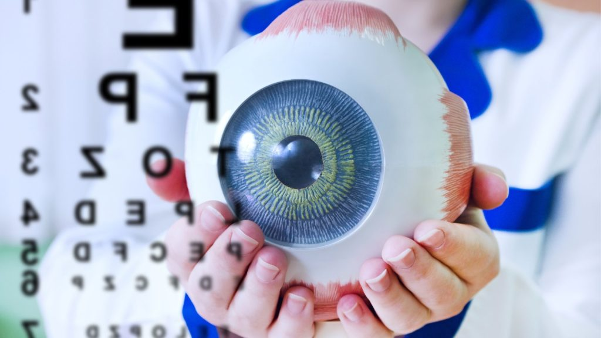
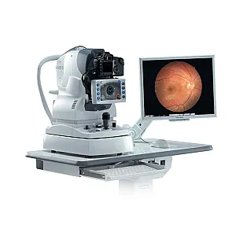
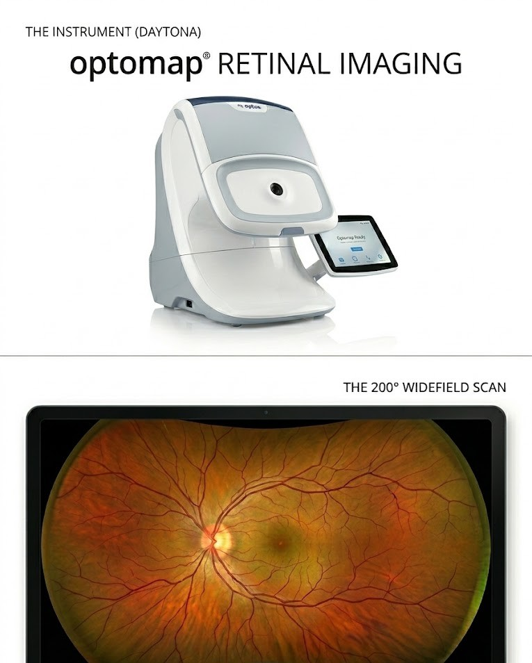
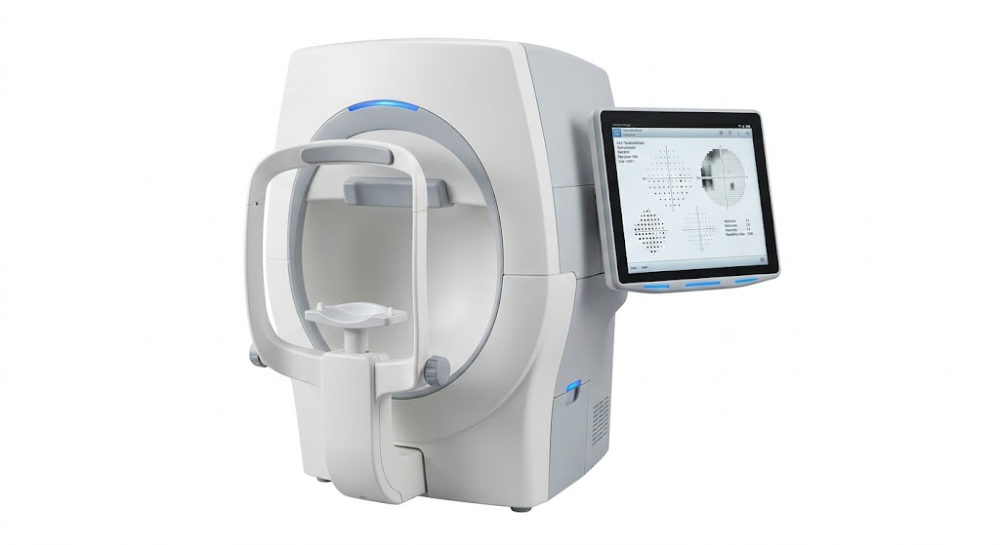
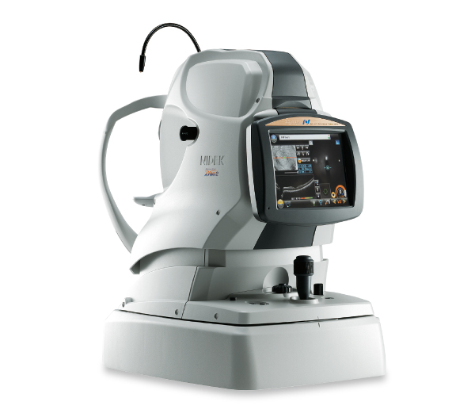

Comprehensive optometry clinics equipped with the latest diagnostic technology. Book your appointment online or call 1-888-381-2677
Book AppointmentTechnology

High-definition retinal photography for detailed imaging and ongoing monitoring of your eye health.
Learn more
Ultra-widefield retinal imaging allowing our doctors to see 200° of your retina in a single, high-resolution capture — often without the need for dilation.
Learn more
Perimetry testing to map your entire field of vision and detect blind spots caused by glaucoma, neurological conditions, and more.
Learn more
High-definition cross-sectional imaging for early disease detection.
Learn more* contact your nearest location to confirm.
Patient Care
First exam by age 6 months, then again before starting school. Early detection of alignment issues and congenital conditions is critical.
By 6 months & age 380% of learning is visual. Annual exams catch prescriptions changes, reading difficulties, and prevent academic struggles before they start.
AnnuallyUpdate prescriptions, manage digital eye strain, and screen for early signs of glaucoma or diabetes-related eye disease before symptoms appear.
Every 1–2 yearsAnnual exams closely monitor age-related conditions like cataracts, glaucoma, and macular degeneration — many of which have no early symptoms.
AnnuallyAlberta Health Care Coverage
Patients under 19 or 65 and older with valid Alberta Health Care coverage are fully covered for comprehensive annual eye exams, follow-up visits, urgent care, dilations, visual field testing, and other medical tests. Coverage resets every year on July 1 and runs through June 30 of the following year.
Your Eye Care Provider
The Canadian Association of Optometrists (CAO) defines an optometrist, Doctor of Optometry, as "an independent primary health care provider who specializes in the examination, diagnosis, treatment, management and prevention of disease and disorders of the visual system, the eye and associated structures as well as the diagnosis of ocular manifestations of systemic conditions."
As primary eye care providers, their main responsibilities include:
Got Questions?
No. Our doctors do not direct bill insurance providers. Payment is due at the time of service and we accept Debit, Mastercard, or Cash. We will provide all required documentation so you can submit your claim directly to your provider for reimbursement.
Vision and ocular health conditions are not always accompanied by recognizable symptoms, and there is often an increased risk to the patient if timely treatment is not started. After your initial exam, your optometrist will schedule checkups at a frequency that meets your particular needs.
The minimum recommended frequency for those at low risk is:
High-risk factors that may require more frequent visits include: premature birth, family history of glaucoma, diabetes, hypertension, visually demanding work, reading or learning disabilities in children, and systemic medications with ocular side effects.
A complete eye exam goes far beyond checking for 20/20 vision. You can expect:
All patients with Alberta Health Care coverage are covered for urgent eye care visits. Our optometrists can diagnose and treat: foreign body removal, blunt trauma, corneal abrasions, welder's flash, chemical splash, red eyes, flashes and floaters, double vision, and eye pain or light sensitivity. If the condition requires further care, they will refer you to the appropriate specialist.
Yes, all our locations are inside Costco warehouses. On the day of your appointment, show your booking confirmation to Costco staff at the exit door to bypass the regular line. Note that our doctors are independent from Costco and the Optical department — as per College by-laws, our doctors do not share profit for glasses, contact lenses, or any other products sold by Costco.
Prescription rechecks are available for past patients within 90 days of their eye exam, and must be with the SAME DOCTOR. Please contact your local clinic directly to arrange this.
Yes. Contact lens fitting and eyeglasses services require a separate appointment with the Optical department, which is independent from your eye exam booking. Please contact them directly to schedule.
In person: Yes, reprints can be provided on the spot during your visit.
By email: To protect your health information under the Alberta Health Information Act, we require identity verification before releasing any records. Email info@drquan.ca with the following:
We will reply with the requested information once your identity is confirmed.
For full details on reprints, ID requirements, and receipt policies, see our Office Policies page.